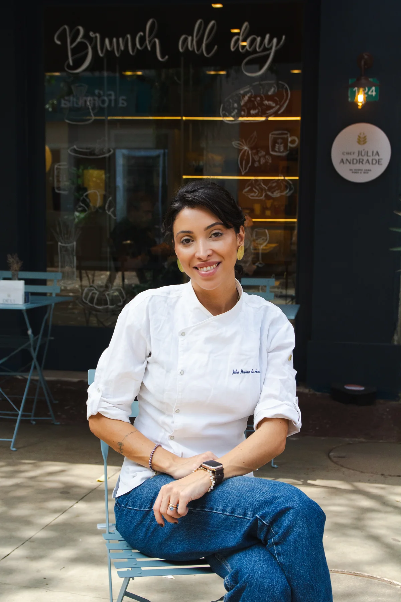
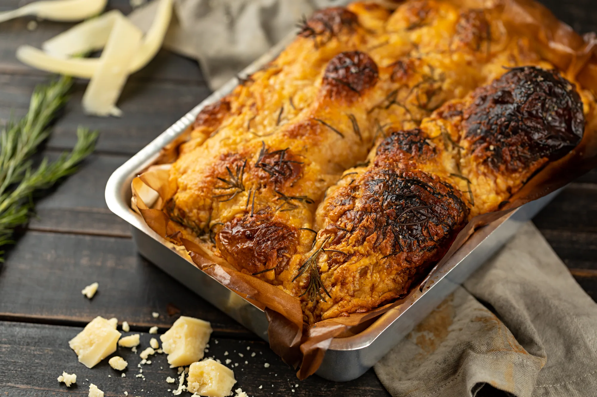
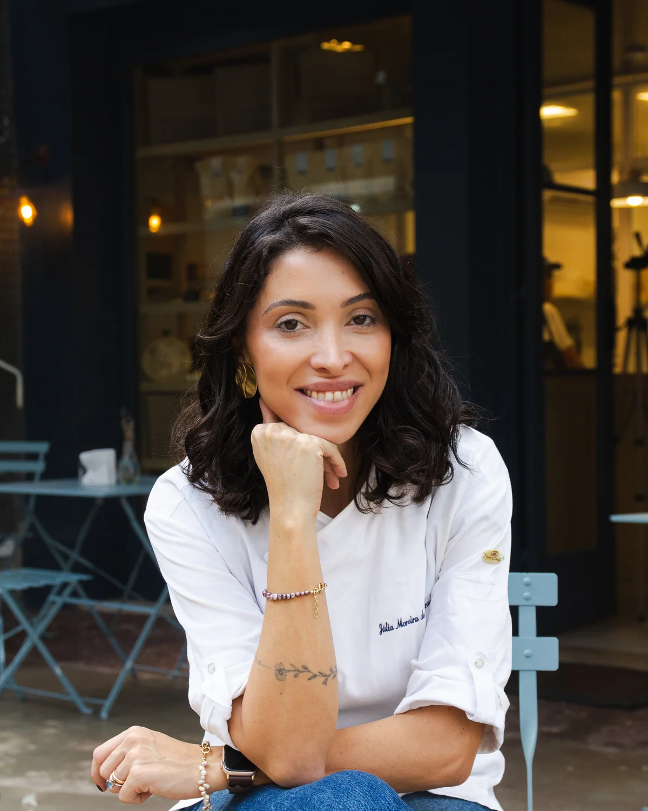
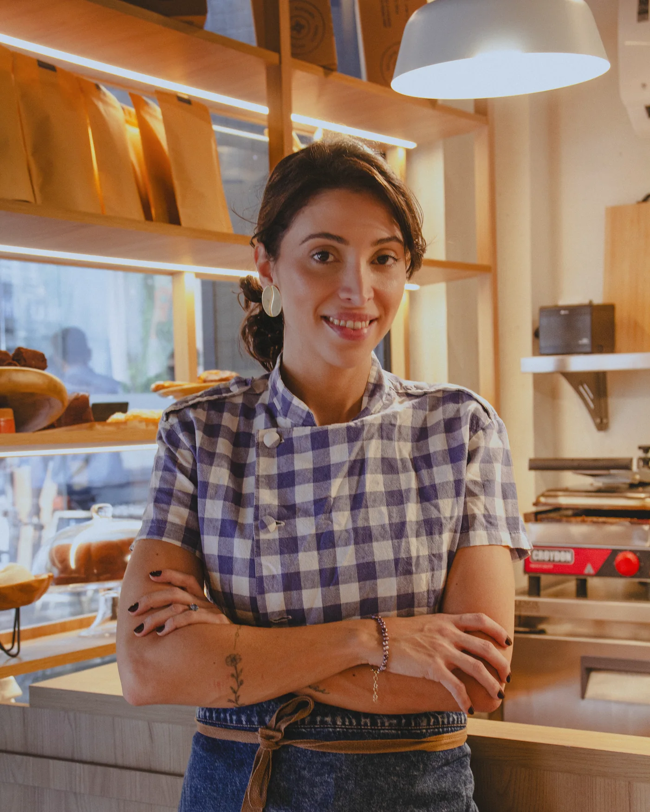
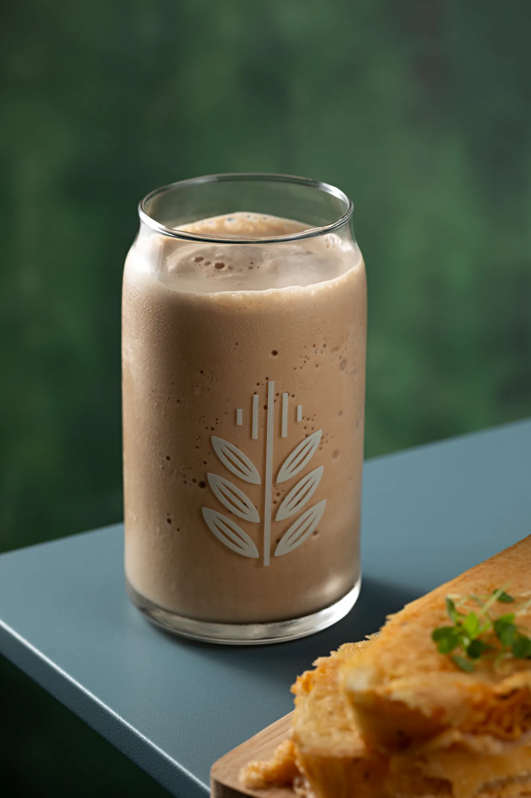

A chef
Júlia Andrade começou fazendo focaccia em casa
Ela é mineira, mora no Rio de Janeiro e comanda a DÉLI, a delicatessen e o café que abriu na Barra da Tijuca em abril de 2026. Antes da loja vieram seis anos de delivery. Antes do delivery, uma focaccia que ela assava na cozinha de casa.
- Formação
- Jornalismo, PUC Minas
- Na cozinha
- mais de 10 anos
- A DÉLI
- desde abril de 2026

O começo
Da cozinha de casa para a mesa dos outros.
Em 2020 a Júlia passou a vender a focaccia que fazia em casa. Era o ano em que ninguém recebia ninguém, e foi ali que ela criou a mesa posta: em vez de um prato, a recepção inteira chegando pronta.
Em seis anos foram milhares de entregas no Rio de Janeiro. As focaccias e os bries assados viraram o que a marca tem de mais conhecido.


Antes disso
Jornalismo em Minas, depois a cozinha
Antes de cozinhar para viver, a Júlia se formou em Jornalismo pela PUC Minas. É de lá que vem o jeito dela de escrever e de explicar o que está servindo.
Depois vieram as cozinhas estreladas, as consultorias, os eventos e as aulas. Ela também passou pelo The Taste Brasil. São mais de dez anos de cozinha antes de a DÉLI abrir a porta.
Linha do tempo
De 2020 até a loja da Barra
2020
A primeira focaccia sai da cozinha de casa, no ano em que ninguém podia receber ninguém. A mesa posta nasce aí, como jeito de mandar a recepção inteira pronta.
Seis anos de delivery
Milhares de entregas no Rio de Janeiro, com as entradas artesanais no centro do cardápio.
Abril de 2026
A DÉLI abre no Shopping Downtown, na Barra da Tijuca. A cozinha ganha endereço, vitrine e mesas na calçada.


A DÉLI foi criada para eu ter liberdade de criar. Quis trazer desde os sucessos do delivery até pratos que eu faço em casa, como o The Toast.
A casa hoje
O que a Júlia serve na loja
A DÉLI trabalha no conceito Brunch all day, que está escrito na vitrine: o café da manhã e o brunch são servidos durante todo o expediente, de segunda a sábado, das 10:00 às 18:00.
No balcão ficam as focaccias de fermentação natural, que passam até 36 horas de fermentação, os bries assados, os crostinis crocantes, as mousses e os cremes autorais. Parte disso é o mesmo produto do delivery, em porção para comer na hora. O salão também pode ser fechado para evento particular.

Onde continuar
O trabalho da Júlia chega até você de três jeitos.
- Pedir pelo cardápio digital
Entrega de segunda a sábado no Rio de Janeiro, com pedido mínimo de R$ 95.
- Visitar a loja na Barra da Tijuca
Av. das Américas, 500, Loja 124, Bloco 21, Shopping Downtown.
- Falar sobre um evento
A partir de 20 pessoas, com equipe da casa. O orçamento é feito pelo WhatsApp.